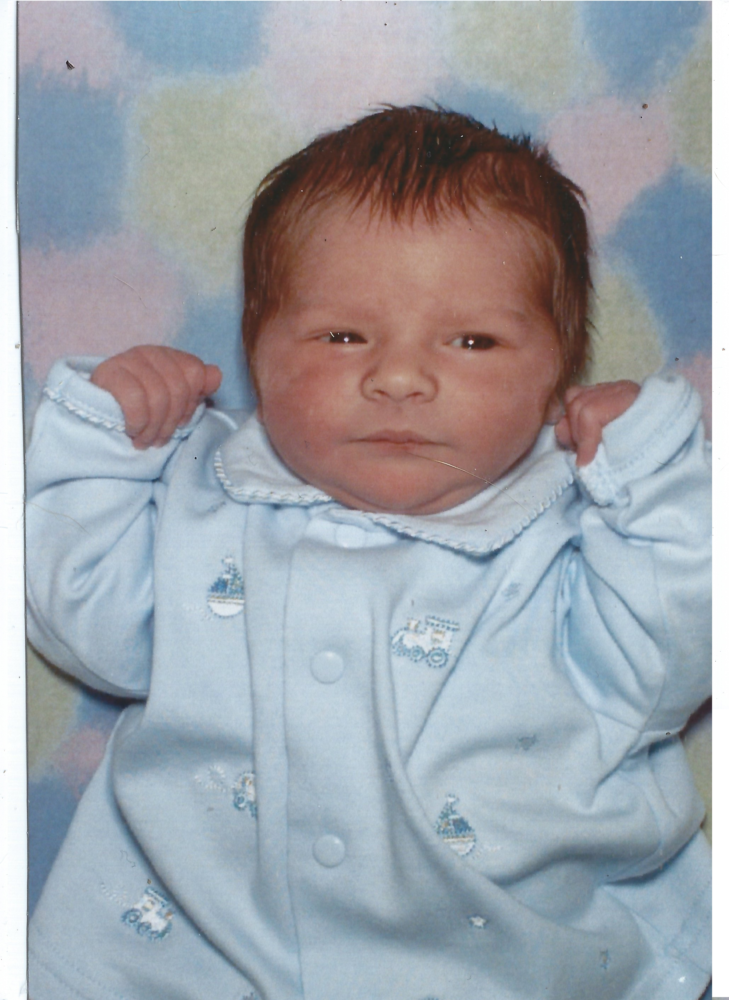
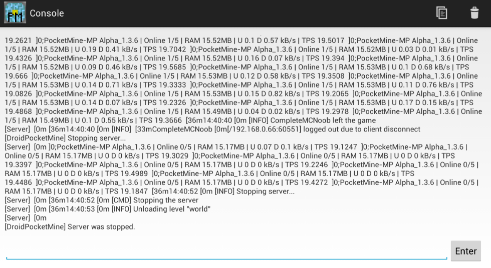

Timeline by Jordan Bush
2001
-
Birth
This is my beginning! I was 21 inches and 8 pounds 4 ounces. That started my life

2006
-
I got my first PC
When I was old enough to know some decent sense so I used it to learn the ins and outs of tweaking a PC. That started my computer interest, it started with a mid range media center PC. But that did not affect anything as a PC can still be used as a PC. When I had it I had made it look like a futuristic computer based off star trek, sadly I do not have that PC anymore so I wouldn't do able to show you what it looked like in its current state.
-
I started homeschool
I started school from home, because my mom liked the idea of it, it was good back then. But it kind of got out of wack by 7th or 8th grade becuase I kept getting subjects I didn't understand what I was doing. Besides that I had also had some socialization when I was in it with a co-op, Its kinda like school except there wasn't homework or too many assignments. I will say not having to do homework after 3 PM was nice, but some things have to go.
2012
-
I was baptised
When I was old enough to know Christ and christianity I became baptised with my sister. I do not have a picture of it within access at the time of writing but I at the time was 11 and had finally put faith in the lord and wanted to make my full commitment and share it with the general public.

2013
-
Made my first successful app
2 years into coding and I recieved my first Android tablet a month prior, being me I wanted to learn how to design my own apps. I began thinking of ideas while playing minecraft(my favorite game at that time), and then it hit me. I need to make a minecraft server I can run on my tablet!

2015
-
Started public School
After the first 9 years in homeschool, some how I wound up here by personal choice. It made myself a better me with good friends and classes! So far I have enjoyed all of it including this assignment, i plan to make it throughout all of it and i hope to finish STRONG!
2016
-
I began my sophomore year
I made it though my freshman year with a C+ average, because the transition can even get the best of us and sometimes its hard to take control of grades when it becomes too late. I learned that and now I am not going to take that route.